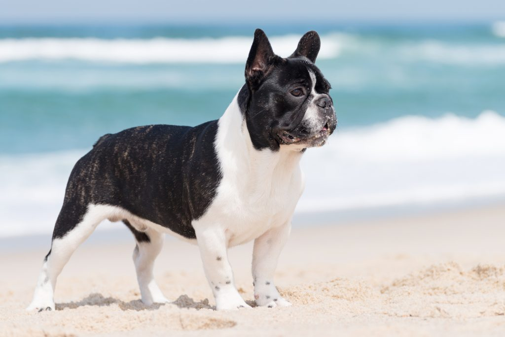

| דף ראשי | גזעים | מחלות | רקעים ותמונות | סקר | צרו קשר |
|---|
| קוקר ספאנייל |
| סמוייד |
| שפיץ יפני |
| פומרניאן |
| פודל |
| דני ענק |
| דלמטי |
| רועה גרמני |
| רועה קווקזי |
| רועה בלגי |
| בולדוג אמריקאי |
| בולדוג צרפתי |
| בולדוג אנגלי |
| צ'או צ'או |
| שיצ'ו |
| אמסטף |
| פינצ'ר |
| רוטווילר |
| דוברמן |
| האסקי סיבירי |
בולדוג צרפתי
מידע נוסף
הבולדוג הצרפתי הוא גזע קטן וחברותי של כלבים, שעל אף שצרפת היא ארץ המוצא שלו, לאמריקאים ולבריטים הייתה יד רחבה בפיתוח הגזע הקומפקטי. הבולדוג הצרפתי או הפרנצ'י, ניחן באישיות כמעט ליצנית, כאשר הוא נהנה להשתטות ולהסב את מירב תשומת הלב שהוא יכול לקבל. למרות שהבולדוג מתחבב ומחבב פחות או יותר את כולם, הוא נקשר עמוקות בדרך כלל לאדם אחד בלבד.
בולדוג צרפתי - מקור הגזע והיסטוריה
פותח לראשונה באנגליה כגרסה מיניאטורית של הבולדוג האנגלי וב1860, מרביע בולדוגים צרפתי ייבא מבריטניה מספר בולדוגים ועירב אותם עם טרייר צרפתי. הגזע החדש והמקסים הפך ללהיט בקהילת היצאניות בצרפת, שהעניקו לו את שמו, "הבולדוג הצרפתי". לאחר שהופץ הגזע החדש, התלהמו האנגלים על שמו בטענה שהבולדוג הינו פרי יצירתה של אנגליה ולא של צרפת ויתרה מזאת, הבולדוג הפך עם השנים לסמל בבריטניה.
בולדוג צרפתי - נתונים ומאפיינים
כלב נעים וקל לטיפול, מלא חיבה ואוהב לשחק, הבולדוג הצרפתי ניחן בקסם מצחיק ומעט מוזר, מסתדר בקלות עם זרים ובעלי חיים אחרים. גזע זה זקוק לחברה ולא יוכל לשרוד בלעדיה. הבולדוג הצרפתי זקוק להרבה תשומת לב ובעליו זקוק להרבה סבלנות ועקביות באילוף. זהו כלב שלומד לאט יחסית, אך בדרכים קלות שלא דורשות אפילו טון אגרסיבי. הצרפתי קטן מימדים ועגלגל עם אוזני עטלף עגולות, גובהו מגיע לממוצע של כ-30 ס"מ ומשקלו יכול להגיע לממוצע של כ-11 ק"ג.
מחלות נפוצות וטיפול - כלב בולדוג צרפתי
הבולדוג הצרפתי רגיש לבעיות בעיניים. אם הכלב שוקל יתר על המידה, ייתכנו בעיות בנשימה עקב בטנו הבלועה. גזע זה עלול לנחור, לחרחר ולהפיח גזים לעתים קרובות ורוב גדול מהבולדוגים הצרפתים אינו מסוגל לשחות עקב מבנה הגוף. לעתים יש צורך בניתוח קיסרי בשעת ההמלטה בגלל גודל ראשם של הבולדוגים. בכללי, הפרנצ'י הינו כלב בעל אחזקה יקרה ויש לצפות ללא מעט ביקורים אצל הווטרינר. תוחלת החיים הממוצעת של גזע זה נעה בין 10 ל-12 שנים.
